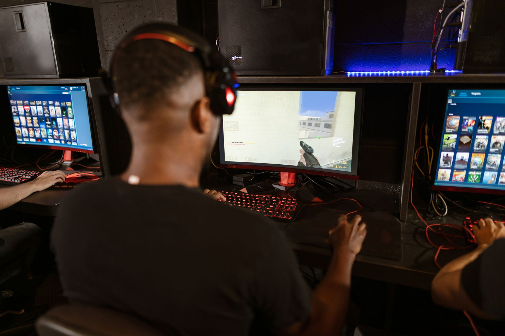

What magixx said about the Nuke setup
In comments reported by HLTV, magixx discussed a conversation with S0tF1k about the way grenades are distributed on Nuke. The key point was simple: magixx said there was a reason he was dropping HE grenades for players assigned to the outside area instead of keeping those grenades for himself. The decision is connected to the role those players play during the opening stages of a round.
I told S0tF1k there's a reason I'm dropping HEs for outside players on Nuke.
Why outside control matters on Nuke
Nuke is built around a large outside yard that connects the terrorist spawn area with several routes into the lower bombsite. Players moving through outside can reach secret, garage, and other key positions, but they are also exposed to defenders watching from multiple angles. That makes early damage and timing especially valuable for the team trying to hold the map.
An HE grenade placed in the right hands can pressure terrorists as they take outside control, force them to slow down, or make a later attack easier to defend. It can also support teammates who are holding hut, ramp, or the lower site by damaging players before they reach those areas. On a map where outside pressure often shapes the whole round, utility assigned to that zone can have more impact than a grenade kept elsewhere.
The value of sharing utility
Grenade drops are a common part of professional Counter-Strike strategy, but they can look unusual to viewers who only see the opening seconds of a round. A player may give away an HE because another teammate has a safer or more useful throwing position. The goal is not to maximize one player’s inventory; it is to make sure the grenade arrives where the team expects contact to happen.
Communication turns a grenade into a tactic
The exchange involving magixx and S0tF1k also highlights the importance of communication in a top-level team. A utility decision only works when every player understands who owns the grenade, when it should be thrown, and what information should trigger the play. Without that communication, a dropped HE can be wasted or leave another part of the defense without the tool it needs.
On Nuke, timing is particularly important because terrorist attacks can quickly move from outside to secret, ramp, or a direct upper-site hit. Defenders must react to sound cues, spotted players, and smoke placements while keeping enough utility for the final execute. Magixx’s explanation suggests that the HE assignment was part of a planned response, not an improvised choice made after the round had already developed.
What this means for CS2 viewers and players
The wider lesson from the magixx Nuke strategy is that utility value depends on location, role, and timing. An HE grenade is not automatically most useful for the player who buys it or carries it out of spawn. If an outside defender has the best chance to damage a group of attackers, transferring that grenade can create more value for the entire defense.
For fans, the comments provide a useful look at the preparation behind professional CS2 matches. Small choices such as who receives an HE can influence map control, information, and the pace of a round. Readers following roster changes and team development can also compare this tactical discussion with our related coverage, YEKINDAR Transfer News: Player Unsure of His Options, available at https://dhyey.bond/blog/yekindar-transfer-news-player-unsure-of-his-options/. Keep following Dhyey for more esports news, Counter-Strike updates, and tactical analysis.
See Also
If you enjoyed this Esports News article, check out YEKINDAR Transfer News: Player Unsure of His Options for more useful reading.